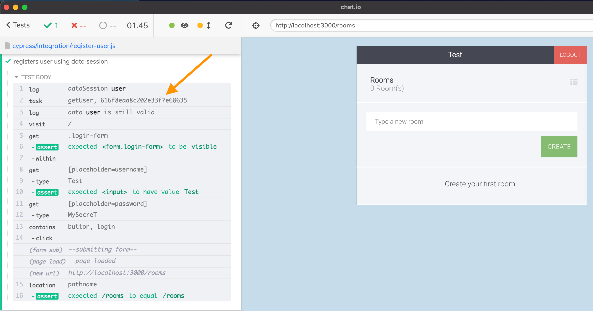

This post will introduce you to a very powerful way of creating and re-using data in your Cypress tests. By re-using the expensive to create objects like users, projects, etc. you will make your tests much much faster, and potentially the tests will be easier to read and maintain.
- Introduction
- Creating the user
- Separate creation from logging in
- Data session
- Register the user via API call
- Register the user via task command
- Caching data
- Logging using API call
- Caching the session cookie
- Data session methods
- Dependent sessions
- More info
Introduction
Imagine your Cypress test needs to create a user before logging in. Is creating a user an instant step? No, it probably takes time, especially if you go through the app's user interface without using API calls or App Actions. So you want to create a user and keep it around, to avoid re-creating it for each test. Sometimes you do want to check if the user object or some other piece of data is still valid; maybe another test has cleared the database, removing all the users. So you need a mechanism for validating the user before the test proceeds.
These actions: creating a piece of test data, storing it for other tests to use, validating, and re-creating if the validation has failed, are very common. Thus I have written a plugin called cypress-data-session to avoid re-implementing the same boilerplate in my code. This plugin gives an introduction to the plugin's use in the real-world scenarios.
Creating the user
Let's create an user for our application - which is required to log in, and create a chat room. A typical test would do something like this:
1 | /// <reference types="cypress" /> |
üéÅ You can find the source code examples used in this blog post in the repo bahmutov/chat.io.
The first time this test runs, everything goes well. The user is created and can log in.
But when we rerun the test, it fails, since the user with the same username already exists.
Sure, the failure is expected. We have four choices:
- delete all users before each test so we can create the user
Testwith the passwordMySecreT. - delete just the user
Testif it exists. - create a user with unique random name just for this test.
- cache the created user and reuse it.
The last option is the hardest to implement, but can offer substantial speed savings, since create a user (or some complicated piece of test data) can be slow.
Separate creation from logging in
Before we proceed, I want to point out that the test above mixes creating the user object and using it. We probably want to keep the act of creating the user really clear, thus I will rewrite the test a little bit.
1 | function registerUser(username, password) { |
The above test fails if we re-run it, so let's take care of that. Let's delete the user before each test. I have registered a task in the plugin file to connect to the database and clear all users. Just for kicks I also added a task to find a user by username.
1 | const database = require('../../app/database') |
At the start of the test, we can delete all users in the database (which is fine, we are running one test at a time).
1 | it('registers user', () => { |
Nice, the test can be re-run multiple times. But we can do better - let us avoid deleting all users. We can quickly check if the already created user is still valid.
1 | it('registers user', () => { |
The above test is much much faster - since it reuses the previously created user, and avoids recreating unnecessarily.
Data session
Now let us rewrite the above test using cypress-data-session plugin. We will import the plugin from the support file, which gives us the cy.dataSession command. First, let's recreate the original "naive" create and log in behavior:
1 | it('registers user using data session', () => { |
The test passes on the first attempt if there are no users in the database.
Great, we created the data item (the user) using the setup method, and gave the data session an alias "user". We can pass some data from that alias later; it can be used to access the object created by the setup method.
Notice, if we re-run the test, it fails when it tries to run the setup method again.
The data session does not know that the user object is still valid, and should not be recomputed. Let's tell the data session how to check. We will add the validate method that can run Cypress commands and resolves with a boolean value. If we yield true, the data session will skip recomputing the user again.
1 | cy.dataSession({ |
The test now immediately logs in - because the user is still valid.
Register the user via API call
We can optimize how we create the user. Instead of filling the form fields and submitting the form, we could simply post it using the cy.request command.
1 | function registerApi(username, password) { |
The test passes and is faster.
Register the user via task command
We can bypass the API and directly create the user in the database (of course, we can use the application database model layer to avoid creating an invalid entity) by calling the plugin code via cy.task command.
1 | const database = require('../../app/database') |
üìù For more examples on how to connect to the MongoDB database from Cypress tests, read the blog post Testing Mongo with Cypress or How To Verify Phone Number During Tests Part 2.
We can now register a user really quickly.
1 | cy.dataSession({ |
Caching data
The cy.dataSession command above helped us organize the user creation a little bit, but its power is in caching a piece of created data. For example, why do we need the username to check if the user is still valid? A user object should be checked by its ID! The user ID is returned by the cy.task('makeUser'), so let's store it somewhere. That is precisely what cy.dataSession can do internally, so you do not have to do it! It can even store it across the specs, so it survives hard reloads and opening a different spec.
In fact, the user ID has already been stored - because that is what the Cypress command chain inside the setup method yields. That ID is stored in the session, and we can see what the session stores using a static method Cypress.getDataSession added to the global Cypress object by the plugin.
We can store any object there, let's keep the user ID, the username, and the password together.
1 | cy.dataSession({ |
What about validating the data? Does it need to rely on the external closure variable username? No - the data session code automatically passes the stored data to the validate method! We can rewrite the validate method to use the parameter instead of the external variable:
1 | cy.dataSession({ |
Even better, we can grab the ID property and use the task getUser to validate the user quicker
1 | cy.dataSession({ |
Notice how the Command Log shows the cy.task checking the user ID now

The stored user object is automatically available under a Cypress alias and under the test context property.
1 | const username = 'Test' |
The name we gave the data session "user" became a Cypress alias, reachable using the cy.get command or via the text context property.
Tip: the plugin adds static methods to the global Cypress object that allow you inspecting individual sessions, clearing them, or disabling the plugin completely, all from the browser's DevTools console. See the README.
Logging using API call
In our code, we are using the cy.task to create the user if necessary, but we still log in using the page form. To log in faster, we can use cy.request command. This command can submit the /login form and set any returned cookies, like the connect.sid session cookie the application is using.
1 | export const loginViaApi = (username, password) => { |
Look good, and it is faster too, since we avoid visiting the page and typing into the form, and then submitting it.
When we log in using the form or via cy.request call, the browser receives the session cookie from the backend. This cookie is associated with the user we have created. If this cookie is removed, the server redirects the page back to the log in.
If we log in once, and save this cookie in a variable, we could log in instantly the second time by setting it before cy.visit. This sounds a lot like ... cy.dataSession command. Let's "build" it by first just using the setup method and storing the cookie inside the data session. Change the loginViaApi function to yield the cookie value, and call this method from the setup method - this will store the cookie in the data session cache.
1 | export const loginViaApi = (username, password) => { |
The second cy.dataSession always recreates the cookie as the captured movie below shows - because we do not have the validate method yet.
Let's think when the cookie is valid - when it has any value. Of course, we could validate the cookie fully by making an authorized request and checking if it fails. But for now, let's assume that IF we have a cookie, then it is ok to use it again. We can tell the data session that any previous value is ok to reuse by using validate: true value.
1 | cy.dataSession({ |
Hmm, the test has failed - the user was not logged in when the test visited the page.

Cypress clears all cookies before each test. Thus the data storage has a cookie from the previous session BUT it is still in memory. We told the cy.dataStorage that the cookie is valid, but we also need to tell it how to restore the cookie and set it in the browser before proceeding. We have the method recreate for this; it receives the value from the data session storage (just like the method validate does).
1 | cy.dataSession({ |
Reusing the previous session cookie is very very fast, even compared to logging in using the cy.request command.
Data session methods
The cy.dataSession allows you to create the initial item using setup, stores it, validates if the previous item is still valid using validate, and if it is still valid, set it back into the browser using any Cypress commands using the recreate method. One could summarize the logic using the following list:
- if there is no previous item for the session named X
- run the
setupand store the item under name X
- run the
- else
- there is a previous item
- check if it is still valid using
validate- if still valid, call
recreateif provided - otherwise call the
setupagain
- if still valid, call
There are a few other lifecycle methods in cy.dataSession to make dealing with the item more explicit, see the README for details.
Dependent sessions
Multiple sessions store their data separately. We can check what the session stores from the DevTools console.
The two data sessions have a dependency; if the user object is recreated, then the previously stored cookie becomes invalid. One cannot log in using a session for a user that does not exist! Thus we need to invalidate the data session "logged in user" when running the "user" session setup. We can do it explicitly from the "user" data session. When running the setup function, call Cypress.clearDataSession('logged in user') and it is deleted.
1 | cy.dataSession({ |
In the recording below all data sessions are set, but I clear the users from the database table and clear the "user" data session, forcing the cy.dataSession to recreate the user. The setup runs and clears the "logged in user" data session. That's why you see the message "first time for session logged in user" in the Cypress Command Log.
There is an alternative way to re-compute the data session which I prefer. Instead of the "user" data session clearing every session that might need to be recomputed, why don't we tell the "logged in user" that it depends on the "user" session? There is a parameter that specifies it:
1 | cy.dataSession({ |
Notice how the second data session declares all sessions it depends on using dependsOn: ['user'] parameter. Under the hood, each data session generates a new random UUID when it is computed using the setup call. Every session with dependencies keeps a list of UUIDs for the sessions it depends on. During the validate step, if any of the upstream data sessions have a different UUID from its list, then it must have been recomputed, and thus the current data session is no longer valid. Clean and simple!
More info
I believe the cypress-data-session plugin provides a very flexible and powerful way for creating and re-using any data during Cypress tests. It can do all the things I have shown in this blog post and more. For example, it can share the data across specs! For more information, see the plugin's README, and the example application bahmutov/chat.io. You can also find lots of example videos, some of them linked here:
- Introduction to cypress-data-session package
- Use Data Alias Created Automatically By cypress-data-session
- Create User Using cypress-data-session Command
- Invalidate cy.session From cypress-data-session
- Share Data Across Specs Using cypress-data-session Plugin
- Use cy.dataSession To Create A User And Log In
- Quickly Create A User And Log in Using Dependent Data Sessions
- Introduction To cypress-data-session Plugin
See the cypress-data-session README Videos section for the up-to-date list.
Read the blog post Faster User Object Creation.